pacman::p_load(sf, tmap, tidyverse,knitr,sfdep,ggrepel)Hands-on 5.b: Local Measures of Spatial Autocorrelationn
1 Overview
Local Measures of Spatial Autocorrelation (LMSA) focus on the relationships between each observation and its surroundings, rather than providing a single summary of these relationships across the map. In this sense, they are not summary statistics but scores that allow us to learn more about the spatial structure in our data.
The general intuition behind the metrics however is similar to that of global ones. Some of them are even mathematically connected, where the global version can be decomposed into a collection of local ones. One such example are Local Indicators of Spatial Association (LISA). Beside LISA, Getis-Ord’s Gi-statistics will be introduce as an alternative LMSA statistics that present complementary information or allow us to obtain similar insights for geographically referenced data.
In this hands-on exercise, we will learn how to compute Local Measures of Spatial Autocorrelation (LMSA) by using sfdep package. By the end to this hands-on exercise, we will be able to:
- import geospatial data using appropriate function(s) of sf package,
- import csv file using appropriate function of readr package,
- perform relational join using appropriate join function of dplyr package,
- compute Local Indicator of Spatial Association (LISA) statistics for detecting clusters and outliers by using appropriate functions sfdep package;
- compute Getis-Ord’s Gi-statistics for detecting hot spot or/and cold spot area by using appropriate functions of sfdep package; and
- to visualise the analysis output by using tmap package.
2 Getting Started
2.1 The analytical question
In spatial policy, one of the main development objective of the local government and planners is to ensure equal distribution of development in the province. Our task in this study, hence, is to apply appropriate spatial statistical methods to discover if development are even distributed geographically. If the answer is No. Then, our next question will be “is there sign of spatial clustering?”. And, if the answer for this question is yes, then our next question will be “where are these clusters?”
In this case study, we are interested to examine the spatial pattern of a selected development indicator (i.e. GDP per capita) of Hunan Provice, People Republic of China.
2.2 The Study Area and Data
Two data sets will be used in this hands-on exercise, they are:
Hunan province administrative boundary layer at county level. This is a geospatial data set in ESRI shapefile format.
Hunan_2012.csv: This csv file contains selected Hunan’s local development indicators in 2012.
2.3 Setting the Analytical Toolls
| Library | Desc |
|---|---|
| sf | handling geospatial data |
| tmap | visualization for geospatial data |
| tidyverse | handling data including packages readr, tidyr and dplyr |
| knitr | generate elegant, flexible, and fast dynamic report |
| sfdep | compute spatial weights, global and local spatial autocorrelation statistics |
2.4 Getting the Data Into R Environment
In this section, we will learn how to bring a geospatial data and its associated attribute table into R environment. The geospatial data is in ESRI shapefile format and the attribute table is in csv fomat.
2.4.1 Import shapefile
The code chunk below uses st_read() of sf package to import Hunan shapefile into R. The imported shapefile will be simple features Object of sf.
hunan <- st_read(dsn = "data/geospatial",
layer = "Hunan") %>%
st_transform(crs = 32650)Reading layer `Hunan' from data source
`/Users/johsuan/johsuanh/ISSS626-GAA/Hands-on/Hands-on-Ex05/data/geospatial'
using driver `ESRI Shapefile'
Simple feature collection with 88 features and 7 fields
Geometry type: POLYGON
Dimension: XY
Bounding box: xmin: 108.7831 ymin: 24.6342 xmax: 114.2544 ymax: 30.12812
Geodetic CRS: WGS 84st_crs(hunan)Coordinate Reference System:
User input: EPSG:32650
wkt:
PROJCRS["WGS 84 / UTM zone 50N",
BASEGEOGCRS["WGS 84",
ENSEMBLE["World Geodetic System 1984 ensemble",
MEMBER["World Geodetic System 1984 (Transit)"],
MEMBER["World Geodetic System 1984 (G730)"],
MEMBER["World Geodetic System 1984 (G873)"],
MEMBER["World Geodetic System 1984 (G1150)"],
MEMBER["World Geodetic System 1984 (G1674)"],
MEMBER["World Geodetic System 1984 (G1762)"],
MEMBER["World Geodetic System 1984 (G2139)"],
MEMBER["World Geodetic System 1984 (G2296)"],
ELLIPSOID["WGS 84",6378137,298.257223563,
LENGTHUNIT["metre",1]],
ENSEMBLEACCURACY[2.0]],
PRIMEM["Greenwich",0,
ANGLEUNIT["degree",0.0174532925199433]],
ID["EPSG",4326]],
CONVERSION["UTM zone 50N",
METHOD["Transverse Mercator",
ID["EPSG",9807]],
PARAMETER["Latitude of natural origin",0,
ANGLEUNIT["degree",0.0174532925199433],
ID["EPSG",8801]],
PARAMETER["Longitude of natural origin",117,
ANGLEUNIT["degree",0.0174532925199433],
ID["EPSG",8802]],
PARAMETER["Scale factor at natural origin",0.9996,
SCALEUNIT["unity",1],
ID["EPSG",8805]],
PARAMETER["False easting",500000,
LENGTHUNIT["metre",1],
ID["EPSG",8806]],
PARAMETER["False northing",0,
LENGTHUNIT["metre",1],
ID["EPSG",8807]]],
CS[Cartesian,2],
AXIS["(E)",east,
ORDER[1],
LENGTHUNIT["metre",1]],
AXIS["(N)",north,
ORDER[2],
LENGTHUNIT["metre",1]],
USAGE[
SCOPE["Navigation and medium accuracy spatial referencing."],
AREA["Between 114°E and 120°E, northern hemisphere between equator and 84°N, onshore and offshore. Brunei. China. Hong Kong. Indonesia. Malaysia - East Malaysia - Sarawak. Mongolia. Philippines. Russian Federation. Taiwan."],
BBOX[0,114,84,120]],
ID["EPSG",32650]]
Note
The raw data is in WGS 84 geographic coordinates system. For geospatial analysis, it is appropriate to use projected coordinates system.
In the code chunk above, st_transform() is used to transform Hunan geospatial data from WGS 84 to UTM zone 50N (i.e. EPSG: 32650).
Area of use: Between 114°E and 120°E, northern hemisphere between equator and 84°N, onshore and offshore. Brunei. China. Hong Kong. Indonesia. Malaysia - East Malaysia - Sarawak. Mongolia. Philippines. Russian Federation. Taiwan
After importing the shape file, let’s plot the graph:
par(bg="#f6f6f6")
plot(hunan)
2.4.2 Import CSV File
Next, we will import Hunan_2012.csv into R by using read_csv() of readr package. The output is R dataframe class.
hunan2012 <- read_csv("data/aspatial/Hunan_2012.csv")kable(head(hunan2012))| County | City | avg_wage | deposite | FAI | Gov_Rev | Gov_Exp | GDP | GDPPC | GIO | Loan | NIPCR | Bed | Emp | EmpR | EmpRT | Pri_Stu | Sec_Stu | Household | Household_R | NOIP | Pop_R | RSCG | Pop_T | Agri | Service | Disp_Inc | RORP | ROREmp |
|---|---|---|---|---|---|---|---|---|---|---|---|---|---|---|---|---|---|---|---|---|---|---|---|---|---|---|---|---|
| Anhua | Yiyang | 30544 | 10967.0 | 6831.7 | 456.72 | 2703.0 | 13225.0 | 14567 | 9276.9 | 3954.9 | 3528.3 | 2718 | 494.31 | 441.4 | 338.0 | 54.175 | 32.830 | 290.4 | 234.5 | 101 | 670.3 | 5760.60 | 910.8 | 4942.253 | 5414.5 | 12373 | 0.7359464 | 0.8929619 |
| Anren | Chenzhou | 28058 | 4598.9 | 6386.1 | 220.57 | 1454.7 | 4941.2 | 12761 | 4189.2 | 2555.3 | 3271.8 | 970 | 290.82 | 255.4 | 99.4 | 33.171 | 17.505 | 104.6 | 121.9 | 34 | 243.2 | 2386.40 | 388.7 | 2357.764 | 3814.1 | 16072 | 0.6256753 | 0.8782065 |
| Anxiang | Changde | 31935 | 5517.2 | 3541.0 | 243.64 | 1779.5 | 12482.0 | 23667 | 5108.9 | 2806.9 | 7693.7 | 1931 | 336.39 | 270.5 | 205.9 | 19.584 | 17.819 | 148.1 | 135.4 | 53 | 346.0 | 3957.90 | 528.3 | 4524.410 | 14100.0 | 16610 | 0.6549309 | 0.8041262 |
| Baojing | Hunan West | 30843 | 2250.0 | 1005.4 | 192.59 | 1379.1 | 4087.9 | 14563 | 3623.5 | 1253.7 | 4191.3 | 927 | 195.17 | 145.6 | 116.4 | 19.249 | 11.831 | 73.2 | 69.9 | 18 | 184.1 | 768.04 | 281.3 | 1118.561 | 541.8 | 13455 | 0.6544614 | 0.7460163 |
| Chaling | Zhuzhou | 31251 | 8241.4 | 6508.4 | 620.19 | 1947.0 | 11585.0 | 20078 | 9157.7 | 4287.4 | 3887.7 | 1449 | 330.29 | 299.0 | 154.0 | 33.906 | 20.548 | 148.7 | 139.4 | 106 | 301.6 | 4009.50 | 578.4 | 3793.550 | 5444.0 | 20461 | 0.5214385 | 0.9052651 |
| Changning | Hengyang | 28518 | 10860.0 | 7920.0 | 769.86 | 2631.6 | 19886.0 | 24418 | 37392.0 | 4242.8 | 9528.0 | 3605 | 548.61 | 415.1 | 273.7 | 81.831 | 44.485 | 211.2 | 211.7 | 115 | 448.2 | 5220.40 | 816.3 | 6430.782 | 13074.6 | 20868 | 0.5490628 | 0.7566395 |
2.3.3 Perform Relational Join
The code chunk below will be used to update the attribute table of hunan’s SpatialPolygonsDataFrame with the attribute fields of hunan2012 dataframe. This is performed by using left_join() of dplyr package.
After performing a left join, we remove unnecessary columns and retain only ‘NAME_2’, ‘ID_3’, ‘NAME_3’, ‘ENGTYPE_3’, ‘County’, and ‘GDPPC’ for further analysis.
hunan <- left_join(hunan,hunan2012,
by = "County") %>%
select(1:4, 7, 15)
kable(head(hunan,5))| NAME_2 | ID_3 | NAME_3 | ENGTYPE_3 | County | GDPPC | geometry |
|---|---|---|---|---|---|---|
| Changde | 21098 | Anxiang | County | Anxiang | 23667 | POLYGON ((22320.48 3301894,… |
| Changde | 21100 | Hanshou | County | Hanshou | 20981 | POLYGON ((35522.96 3230355,… |
| Changde | 21101 | Jinshi | County City | Jinshi | 34592 | POLYGON ((5120.127 3285521,… |
| Changde | 21102 | Li | County | Li | 24473 | POLYGON ((-43433.9 3326204,… |
| Changde | 21103 | Linli | County | Linli | 25554 | POLYGON ((-19307.27 3304609… |
class(hunan)[1] "sf" "data.frame"3 Visualize Regional Development Indicator
Now, we are going to prepare a basemap and a choropleth map showing the distribution of GDP Per Capita (GDPPC) 2012 by using tmap package:
equal <- tm_shape(hunan) +
tm_polygons(fill = "GDPPC",
fill.scale = tm_scale_intervals(
style = "equal",
n = 5,
values = "brewer.blues")) +
tm_text("NAME_3", size=0.6)+
tm_title("Equal interval classification",
position = tm_pos_out("center", "top", "center")) +
tm_layout(
legend.position = c("left", "bottom"),
bg.color = "#f6f6f6",
frame = FALSE)
quantile <- tm_shape(hunan) +
tm_polygons(fill = "GDPPC",
fill.scale = tm_scale_intervals(
style = "quantile",
n = 5,
values = "brewer.blues")) +
tm_text("NAME_3", size=0.6)+
tm_title("Quantile classification",
position = tm_pos_out("center", "top", "center")) +
tm_layout(
legend.position = c("left", "bottom"),
bg.color = "#f6f6f6",
frame = FALSE)
tmap_arrange(equal,
quantile,
asp=1,
ncol=2)
4 Local Indicators of Spatial Association(LISA)
Local Indicators of Spatial Association (LISA) are statistics that measure spatial patterns at a local level, unlike global measures (like Moran’s I or Geary’s C) which summarize the whole area. It evaluate the existence of clusters and/or outliers:
- Clusters: neighboring areas with similar values (high-high or low-low).
- Outliers: areas that are very different from their neighbors (high-low or low-high).
For instance if we are studying distribution of GDP per capita of Hunan Provice, People Republic of China, local clusters in GDP per capita mean that there are counties that have higher or lower rates than is to be expected by chance alone;The idea is to see whether these patterns are just random or statistically significant.
In this section, we will learn how to apply appropriate Local Indicators for Spatial Association (LISA), especially local Moran’I to detect cluster and/or outlier from GDP per capita 2012 of Hunan Province, PRC.
4.1 Computing Contiguity Spatial Weights
Before we can compute the local spatial autocorrelation statistics, we need to construct a spatial weights of the study area. The spatial weights is used to define the neighbourhood relationships between the geographical units (i.e. county) in the study area.
In the code chunk below, st_contiguity() of sfdep package is used to compute contiguity weight matrices for the study area. This function builds a neighbours list based on regions with contiguous boundaries. If you look at the documentation you will see that you can pass a “queen” argument that takes TRUE or FALSE as options. If you do not specify this argument the default is set to TRUE, that is, if you don’t specify queen = FALSE this function will return a list of first order neighbours using the Queen criteria.
Next, st_weights() is used to calculate polygon spatial weights from the nb list.
st_weights() provides three arguments, they are:
nb: A neighbor list object as created by
st_neighbors().style: Default “W” for row standardized weights. This value can also be “B”, “C”, “U”, “minmax”, and “S”. B is the basic binary coding, W is row standardised (sums over all links to n), C is globally standardised (sums over all links to n), U is equal to C divided by the number of neighbours (sums over all links to unity), while S is the variance-stabilizing coding scheme proposed by Tiefelsdorf et al. 1999, p. 167-168 (sums over all links to n).
allow_zero: If TRUE, assigns zero as lagged value to zone without neighbors.
wm_q <- hunan %>%
mutate(nb = st_contiguity(geometry, queen = TRUE),
wt = st_weights(nb, style = "W"),
.before = 1)
How to read the result?
The summary report above shows that:
- There are total 88 area units/conties in Hunan.
- Across all units, there are 448 total neighbor connections, where one region is considered a neighbor of another.
- Only around 5.8% (448 / (88*88) ) of all possible region-to-region connections are considered neighbors
- On average, each region has around 5 neighbors (448/88) under Queen contiguity.
- The Link number distribution says 2 regions (Region 30 & 65) has only 1 neighbor, 2 regions has 2 neighbors,..,1 region (Region 85) has 11 neighbors
4.2 Row-standardised Weights Matrix
Next, we need to assign weights to each neighboring polygon. By doing this, we can measure “influence” of neighboring regions.
In our case, each neighboring polygon will be assigned equal weight (style=“W”). This is accomplished by assigning the fraction: 1/n to each neighboring county then summing the weighted income values. While the method is simple and intuitive, the drawback is that boundary regions have fewer neighbors, so their lagged values might be biased, thus potentially over- or under-estimating the true nature of the spatial autocorrelation in the data
Other robust method includes Binary weights (style="B") - Each neighbor just gets 1, non-neighbors get 0.
The input of
nb2listw()must be an object of class nb. The syntax of the function has two major arguments, namely style and zero.poly.The zero.policy=TRUE option allows for lists of non-neighbors. R will allow observations with no neighbors, treating them as having weights = 0. If FALSE(the default), R will throw an error if any observation has no neighbors.
style can take values “W”, “B”, “C”, “U”, “minmax” and “S”. B is the basic binary coding, W is row standardised (sums over all links to n), C is globally standardised (sums over all links to n), U is equal to C divided by the number of neighbours (sums over all links to unity), while S is the variance-stabilizing coding scheme proposed by Tiefelsdorf et al. 1999, p. 167-168 (sums over all links to n)
How to read the result?
- n: Number of observations (regions/polygons). Here, 88 regions/polygons.
- nn: Total number of neighbor pairs. Together, these polygons have 7744 neighbor connections.
- S0: Sum of all weights in the matrix. The weights are row-standardized (
W), so each row sums to 1 →S0 = 88 - S1: Sum of squared weights
- S2: Sum of squared sums of weights per row
- S1 and S2 are internal numbers used for calculating variance and significance in Moran’s I or Geary’s C.
4.3 Computing Local Moran’s I
To compute local Moran’s I, the local_moran() function of sfdep will be used. It computes Iivalues, given a set of zi values and a listw object providing neighbour weighting information for the polygon associated with the zi values.
| Local Moran’s I Value | Meaning |
|---|---|
| Ii > 1 | Positive & Strong clustering |
| 0 < I_i < 1 | Positive & Moderate positive clustering |
| Ii ≈ 0 | No spatial autocorrelation (random distribution) |
| Ii < 0 | Negative spatial autocorrelation (outliers) |
The code chunks below are used to compute local Moran’s I of GDPPC2012 at the county level.
lisa <- wm_q %>%
mutate(local_moran = local_moran(
GDPPC, nb, wt, nsim = 99),
.before = 1) %>%
unnest(local_moran)local_moran() function returns a matrix of values whose columns are:
- Ii: the local Moran’s I statistics
- E.Ii: the expectation of local moran statistic under the randomisation hypothesis
- Var.Ii: the variance of local moran statistic under the randomisation hypothesis
- Z.Ii:the standard deviate of local moran statistic
- Pr(): the p-value of local moran statistic
glimpse(lisa)Rows: 88
Columns: 21
$ ii <dbl> -1.468468e-03, 2.587817e-02, -1.198765e-02, 1.022468e-03,…
$ eii <dbl> -3.255866e-03, 9.685243e-03, -6.800777e-02, -1.485044e-04…
$ var_ii <dbl> 4.582864e-04, 9.162718e-03, 9.401134e-02, 5.480224e-06, 1…
$ z_ii <dbl> 0.08349353, 0.16916608, 0.18270647, 0.50020427, 0.4345378…
$ p_ii <dbl> 0.9334591186, 0.8656660090, 0.8550283414, 0.6169312546, 0…
$ p_ii_sim <dbl> 0.90, 0.88, 0.74, 0.54, 0.58, 0.80, 0.08, 0.10, 0.02, 0.1…
$ p_folded_sim <dbl> 0.45, 0.44, 0.37, 0.27, 0.29, 0.40, 0.04, 0.05, 0.01, 0.0…
$ skewness <dbl> -0.6803939, -0.9937358, 0.7933378, 1.0276625, 0.8375897, …
$ kurtosis <dbl> 0.07447830, 0.81814921, -0.17073309, 0.53609014, 0.097078…
$ mean <fct> Low-High, Low-Low, High-Low, High-High, High-High, High-L…
$ median <fct> High-High, High-High, High-High, High-High, High-High, Hi…
$ pysal <fct> Low-High, Low-Low, High-Low, High-High, High-High, High-L…
$ nb <nb> <2, 3, 4, 57, 85>, <1, 57, 58, 78, 85>, <1, 4, 5, 85>, <1,…
$ wt <list> <0.2, 0.2, 0.2, 0.2, 0.2>, <0.2, 0.2, 0.2, 0.2, 0.2>, <0…
$ NAME_2 <chr> "Changde", "Changde", "Changde", "Changde", "Changde", "C…
$ ID_3 <int> 21098, 21100, 21101, 21102, 21103, 21104, 21109, 21110, 2…
$ NAME_3 <chr> "Anxiang", "Hanshou", "Jinshi", "Li", "Linli", "Shimen", …
$ ENGTYPE_3 <chr> "County", "County", "County City", "County", "County", "C…
$ County <chr> "Anxiang", "Hanshou", "Jinshi", "Li", "Linli", "Shimen", …
$ GDPPC <dbl> 23667, 20981, 34592, 24473, 25554, 27137, 63118, 62202, 7…
$ geometry <POLYGON [m]> POLYGON ((22320.48 3301894,..., POLYGON ((35522.9…4.3.1 Mapping local Moran’s I values
Using choropleth mapping functions of tmap package, we can plot the local Moran’s I values by using the code chinks below.
ii.map <- tm_shape(lisa) +
tm_polygons(fill = "ii",
fill.scale = tm_scale_intervals(
style = "pretty",
n = 5,
values = "brewer.RdBu"),
fill.legend = tm_legend(
title = "Local Morans'I")) +
tm_borders(fill_alpha = 0.5) +
tm_text("NAME_3", size=0.6)+
tm_title("Loal Morans'I of GDPPC (Queen's method)",
position = tm_pos_out("center", "top", "center"))+
tm_layout(
legend.position = c("left", "bottom"),
bg.color = "#f6f6f6",
frame = FALSE)
ii.map
4.3.2 Mapping local Moran’s I p-values
The choropleth shows there is evidence for both positive and negative Ii values. However, it is useful to consider the p-values for each of these values, as consider above.
The code chunks below produce a choropleth map of Moran’s I p-values by using functions of tmap package.
p_ii.map <- tm_shape(lisa) +
tm_polygons(fill = "p_ii",
fill.scale = tm_scale_intervals(
breaks = c(-Inf, 0.001, 0.01, 0.05, 0.1, Inf),
values = "-brewer.Reds"),
fill.legend = tm_legend(
title = "p-value")) +
tm_borders(fill_alpha = 0.5) +
tm_text("NAME_3", size=0.6)+
tm_title("P-values of Loal Moran's I of GDPPC (Queen's method)",
position = tm_pos_out("center", "top", "center"))+
tm_layout(
legend.position = c("left", "bottom"),
bg.color = "#f6f6f6",
frame = FALSE)
p_ii.map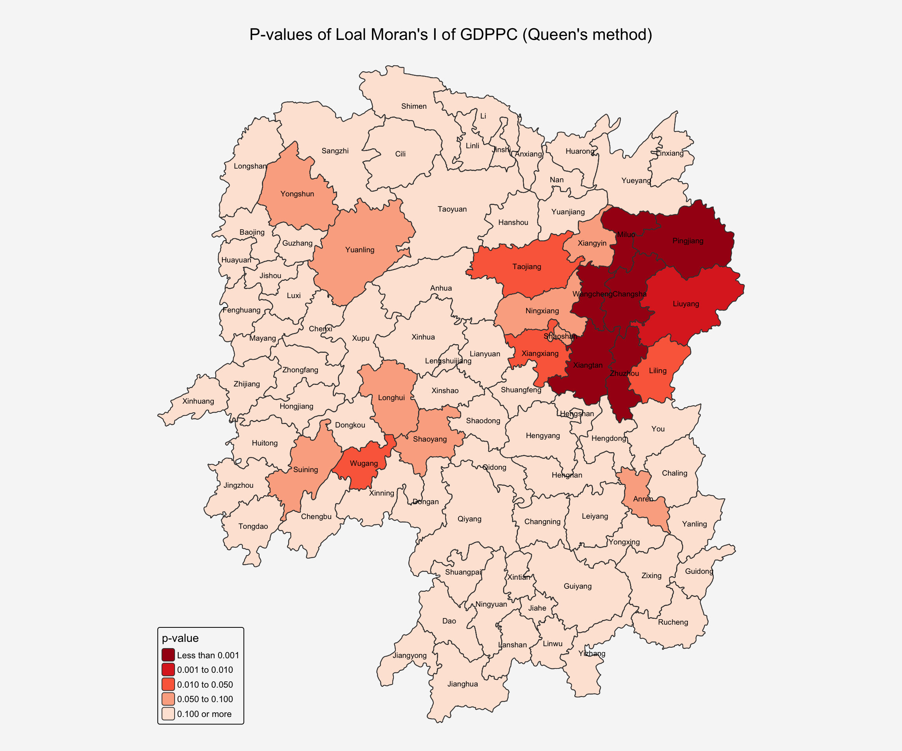
4.3.3 Mapping both local Moran’s I values and p-values
For effective interpretation, it is better to plot both the local Moran’s I values map and its corresponding p-values map next to each other.
The code chunk below will be used to create such visualisation.
tmap_arrange(ii.map, p_ii.map, asp=1, ncol=2)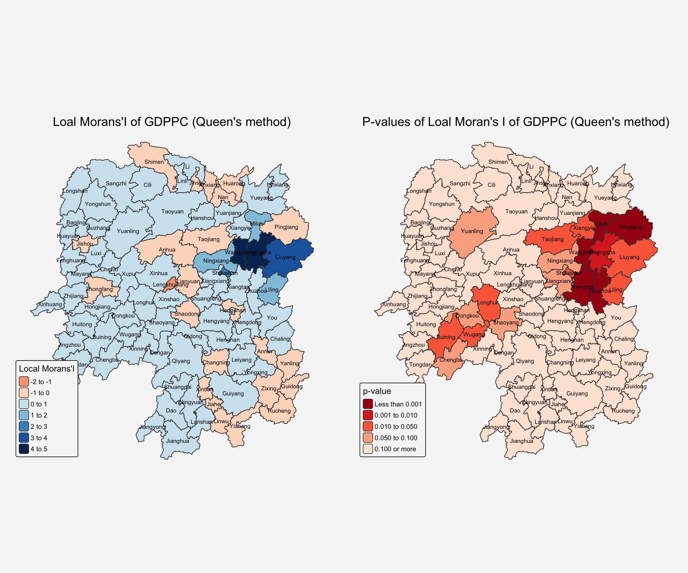
Result Interpretation
Hot Spots (High-High clusters): Counties includingChangsha, Wangcheng and Liuyang in the eastern region form a prominent high-high cluster with high Local Moran’s I values (3-5) and statistically significant p-values. This cluster represents an economic agglomeration where high-GDPPC counties are spatially concentrated, likely benefiting from urban spillover effects and economic synergies.
Cold Spots (Low-Low Clusters): Counties including Longhui and Wugang in the western region form a low-low cluster, with low Local Moran’s I values (0-1) and statistically significant p-values. This pattern indicates a concentration of economically disadvantaged areas, suggesting regional disparities and potential geographic barriers to economic development in the western part of the province.
Outliers (Low-High): Counties includes Taojiang & PingJiang in the east region and with negative Local Moran’s I values (-2 to -1), indicating spatial outliers. These areas have significantly lower GDPPC compared to their neighbors, representing low-high outliers that stand in stark contrast to the surrounding higher-performing counties. It suggests potential economic shadow effects where nearby high-growth areas may be drawing away skilled labor, investment or resources, creating relative economic disadvantages in neighboring regions.
4.4 Preparing and Visualising LISA Map
Visualizing LISA involves creating maps that highlight significant spatial patterns, such as hot spots (high values clustered together) and cold spots (low values clustered together), as well as identifying spatial outliers. Common methods include choropleth maps showing LISA values, Moran scatterplots which depict local spatial autocorrelation for individual locations, and hot spot analysis maps.
The LISA Cluster Map shows the significant locations color coded by type of spatial autocorrelation. The first step before we can generate the LISA cluster map is to plot the Moran scatterplot.
4.4.1 Plotting Moran scatterplot
A Moran Scatterplot is a graphical tool in spatial analysis that visualizes the relationship between a variable’s values and the average values of its neighboring locations (its spatial lag) to identify spatial autocorrelation. By plotting standardized values of the variable on the x-axis and its spatial lag on the y-axis, the plot’s slope represents Moran’s I, revealing patterns of high-high or low-low value clusters and high-low or low-high value outliers.
In the code chunk below, st_lag() of sfdep package is used to calculates the spatial lag of GDPPC given a neighbor (i.e. nb) and weights list (i.e. wt).
lisa <- lisa %>%
mutate(lag_GDPPC = st_lag(
GDPPC, nb, wt),
.before = 1) %>%
unnest(lag_GDPPC)Then, the code chunk below is used to plot the Moran Scatterplot of GDPPC against its spatial lag version as shown in the code cunk below.
ggplot(data = lisa,
aes(x = GDPPC,
y = lag_GDPPC)) +
geom_point() +
geom_smooth(method = "lm",
se = FALSE,
color = "red") +
geom_text_repel(aes(label = County),
size = 3,
max.overlaps = 5)+
labs(x = "GDPPC",
y = "Spatial Lag of GDPPC",
title = "Local Moran's I Scatterplot") +
theme_minimal()+
theme(plot.title = element_text(size = 12),
plot.background = element_rect(fill = "#f6f6f6",color = NA),
panel.background = element_rect(fill = "#f6f6f6",color = NA))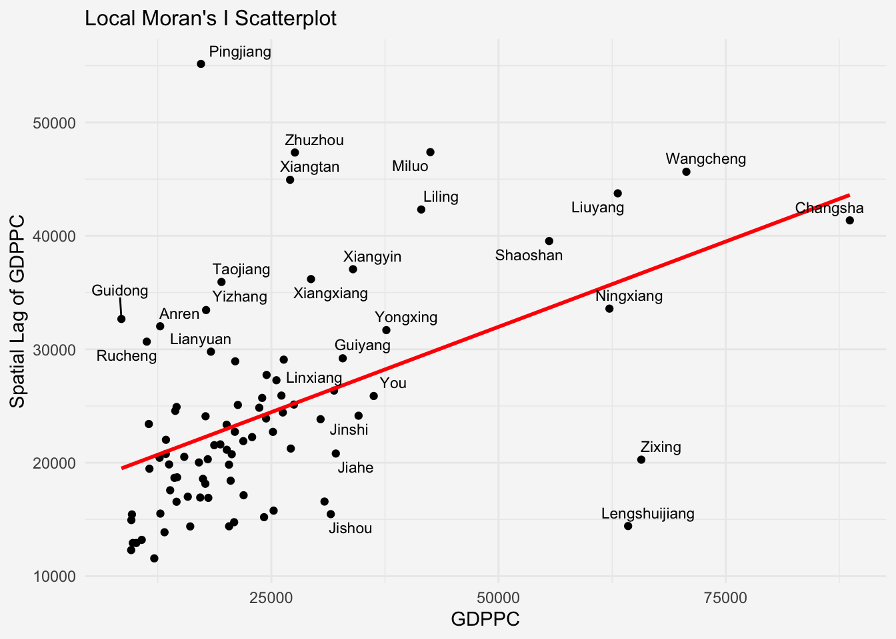
The Moran Scatterplot above is not very intuitive. To support effective visual communication, the code chunk below is used.
ggplot(data = lisa,
aes(x = GDPPC,
y = lag_GDPPC,
color = mean)) +
geom_point(size = 2) +
geom_smooth(method = "lm",
se = FALSE,
color = "black") +
geom_text_repel(aes(label = County),
size = 3,
max.overlaps = 10)+
geom_hline(yintercept=mean(lisa$lag_GDPPC), lty=2) +
geom_vline(xintercept=mean(lisa$GDPPC), lty=2) +
scale_color_manual(
values = c("High-High" = "red",
"Low-Low" = "blue",
"Low-High" = "lightblue",
"High-Low" = "pink")) +
labs(x = "GDPPC",
y = "Spatial Lag of GDPPC",
title = "Moran Scatterplot with LISA Quadrants") +
theme_minimal()+
theme(plot.title = element_text(size = 12),
plot.background = element_rect(fill = "#f6f6f6",color = NA),
panel.background = element_rect(fill = "#f6f6f6",color = NA))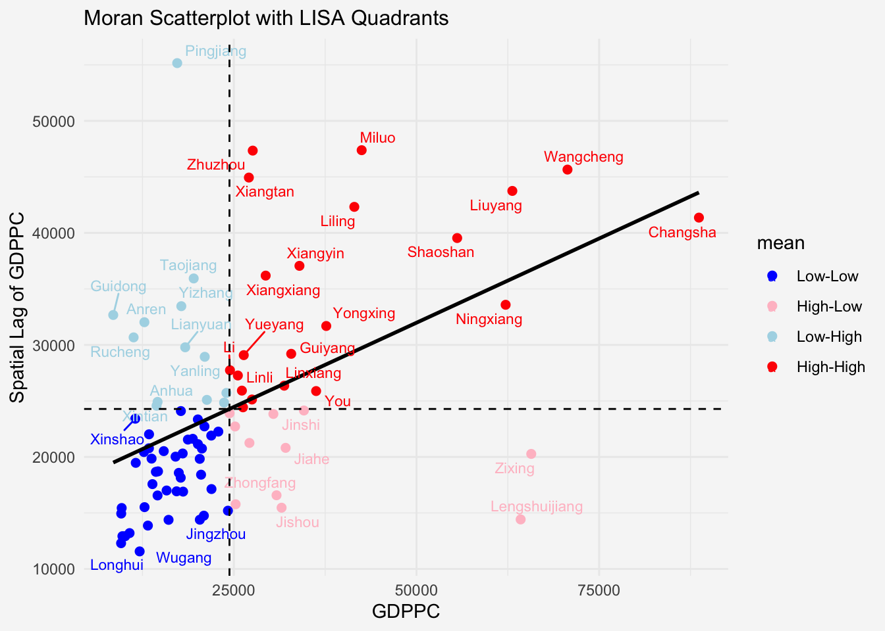
Notice that the plot is split in 4 quadrants. The top right corner belongs to areas that have high GDPPC and are surrounded by other areas that have the average level of GDPPC. This are the high-high locations in the lesson slide.
4.4.2 Plotting Moran scatterplot with standardised variable
First we will use scale() to centers and scales the variable. Here centering is done by subtracting the mean (omitting NAs) the corresponding columns, and scaling is done by dividing the (centered) variable by their standard deviations.
lisa <- lisa %>%
mutate(z_GDPPC = scale(GDPPC),
z_lag_GDPPC = scale(lag_GDPPC),
.before = 1)The as.vector() added to the end is to make sure that the data type we get out of this is a vector, that map neatly into out dataframe.
Now, we are ready to plot the Moran scatterplot again by using the code chunk below.
ggplot(data = lisa,
aes(x = z_GDPPC,
y = z_lag_GDPPC,
color = mean)) +
geom_point(size = 2) +
geom_smooth(method = "lm",
se = FALSE,
color = "black") +
geom_text_repel(aes(label = County),
size = 3,
max.overlaps = 10)+
geom_hline(yintercept=mean(lisa$z_lag_GDPPC), lty=2) +
geom_vline(xintercept=mean(lisa$z_GDPPC), lty=2) +
scale_color_manual(
values = c("High-High" = "red",
"Low-Low" = "blue",
"Low-High" = "lightblue",
"High-Low" = "pink")) +
labs(x = "Standardised GDPPC",
y = "Standardised Spatial Lag of GDPPC",
title = "Standardised Moran Scatterplot with LISA Quadrants") +
theme_minimal()+
theme(plot.title = element_text(size = 12),
plot.background = element_rect(fill = "#f6f6f6",color = NA),
panel.background = element_rect(fill = "#f6f6f6",color = NA)) 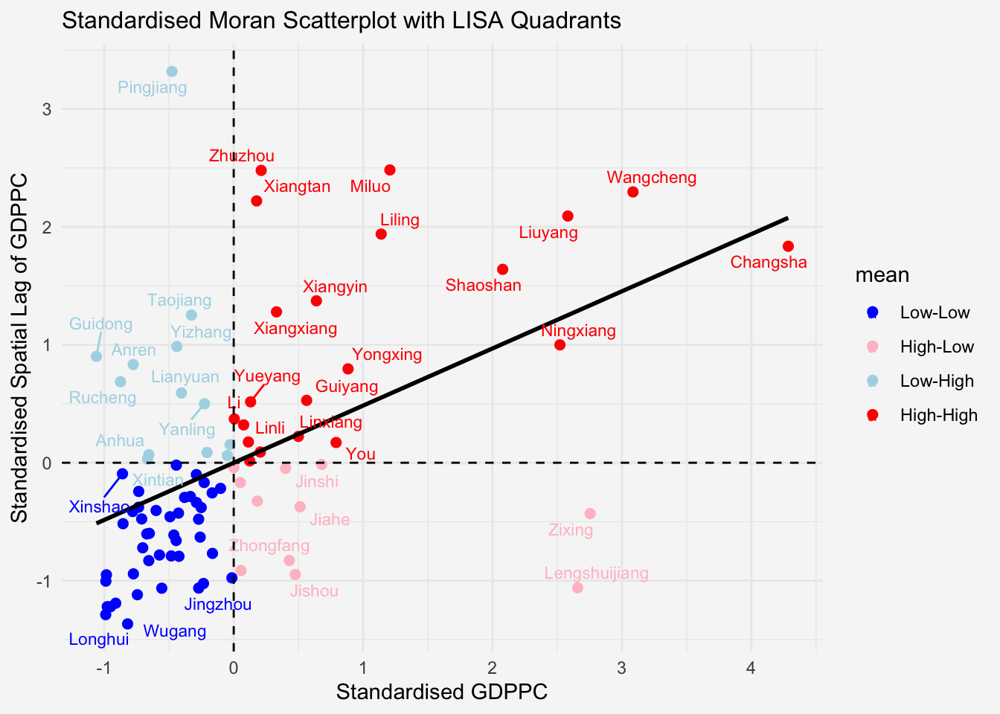
4.4.3 Preparing LISA map classes
The code chunks below show the steps to prepare a LISA cluster map.
Next, derives the spatially lagged variable of interest (i.e. GDPPC) and centers the spatially lagged variable around its mean.
This is follow by centering the local Moran’s around the mean.
Next, we will set a statistical significance level for the local Moran.
signif <- 0.05 4.4.4 Plotting and visualising LISA map
By default, the LISA classes are stored in mean, median and pysal fields of lisa sf data frame. To prepare the LISA map, we will derive a new field called LISA-cluster from either one of these three field by using the code chunk below.
lisa <- lisa %>%
mutate(
LISA_cluster = ifelse(
p_ii_sim < 0.05,
as.character(mean),
"Insignificant"),
LISA_cluster = factor(
LISA_cluster,
levels = c("Insignificant", "Low-Low", "Low-High", "High-Low", "High-High") # by mean value
)
)Notice that a new class called Insignificant has been added for records whereby p_ii_sim > 0.05.
Now, we can plot the LISA map by using the code chunk below.
lisa_map <- tm_shape(lisa) +
tm_polygons(
fill = "LISA_cluster",
fill.scale = tm_scale_categorical(
values = c(
"grey80", # Insignificant
"blue", # Low-Low
"lightblue", # Low-High
"pink", # High-Low
"red" # High-High
)
),
fill.legend = tm_legend(
title = "LISA Cluster",
position = tm_pos_in("left", "bottom"))
) +
tm_text("NAME_3", size=0.6)+
tm_title("Local Moran's I Clusters (p_sim < 0.05)",
position = tm_pos_out("center", "top", "center"))+
tm_layout(
bg.color = "#f6f6f6",
frame = FALSE)
lisa_map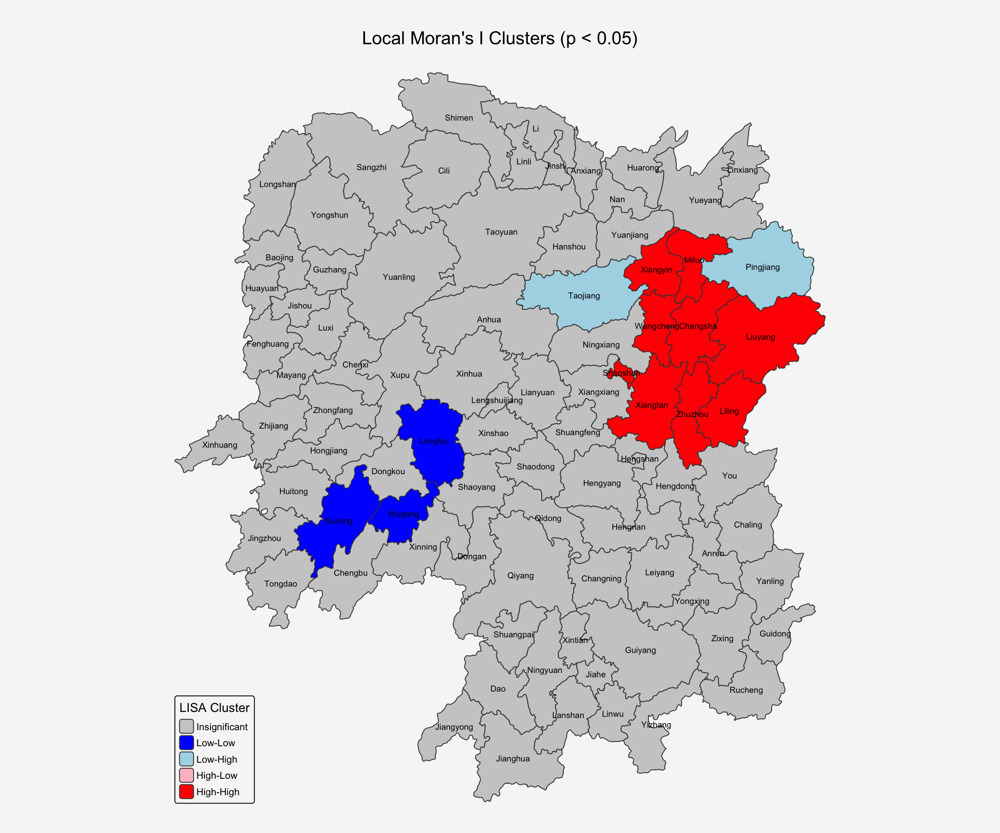
For effective interpretation, it is better to plot both the local Moran’s I values map and its corresponding p-values map next to each other.
The code chunk below will be used to create such visualisation.
We can also include the local Moran’s I map and p-value map as shown below for easy comparison.
tmap_arrange(ii.map, lisa_map, asp=1, ncol=2)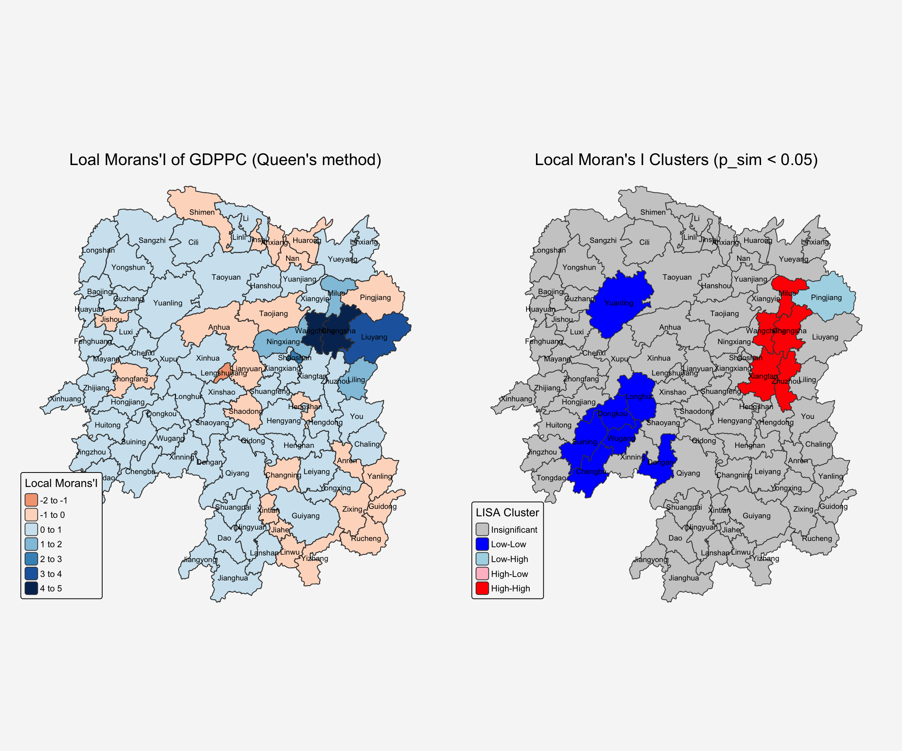
5 Hot Spots and Cold Spots Analysis (HCSA)
Hot spots and cold spots analysis is a technique used in spatial statistics to identify statistically significant clusters of high values (hot spots) and low values (cold spots) of a geographically referenced attribute (i.e. GDPPC). These analyses help visualize and understand spatial patterns, revealing areas where data points are clustered more densely than would be expected by random chance.
Figure below shows the hot spots and cold spots of GDP per capita of Hunan Provice, People Republic of China.
The term hot spots refer to areas where high values are concentrated and surrounded by other high values. It has been used generically across disciplines to describe a region or value that is higher relative to its surroundings (Lepers et al 2005, Aben et al 2012, Isobe et al 2015). For example, a hot spot analysis might reveal clusters of high GDP per capita in a province, indicating areas with significantly higher GDP per capita than other parts of the province.
On the other hands, the term cold spots refer to areas where low values are concentrated and surrounded by other low values. An example could be clusters of low GDP per capita, indicating areas where GDP per capita is consistently low.
HCSA uses statistical methods, like the Getis-Ord Gi* statistic, to determine if the observed clustering is statistically significant or could have occurred randomly.
The analysis consists of four steps:
- Deriving spatial weight matrix
- Computing Gi* statistics
- Mapping Gi* statistics
- Communicating the analysis results
5.1 Deriving distance weight matrix
Whist the spatial autocorrelation considered units which shared borders, for Getis-Ord Gi* statistics, we are defining neighbours based on distance.
There are two type of distance-based proximity matrix, they are:
- fixed distance weight matrix,
- adaptive distance weight matrix, and
- inverse distance weights.
5.1.1 Computing fixed distance weights
In this section, we will learn how to compute fixed distance weight matrix by using st_dist_band() and st_weights() of sfdep package.
Firstly, we need to determine the upper limit for distance band by using the steps below:
ct <- critical_threshold(st_geometry(hunan))
ct[1] 60799.91The summary report shows that the largest first nearest neighbour distance is 60.80 km, so using this as the upper threshold gives certainty that all units will have at least one neighbour.
Using the critical threshold value computed above, code chunk below is used to compute the fixed distance weight.
hunan_fdw <- hunan %>%
mutate(nb = include_self(
st_dist_band(
st_geometry(geometry),
upper = ct)),
wt = st_weights(nb,
style = "W"),
.before = 1)
Note
Noted that for Gi* include_self() must be used to endure that  .
.
5.1.2 Computing adaptive distance weights
One of the characteristics of fixed distance weight matrix is that more densely settled areas (usually the urban areas) tend to have more neighbours and the less densely settled areas (usually the rural counties) tend to have lesser neighbours. Having many neighbours smooth the neighbour relationship across more neighbours.
It is possible to control the numbers of neighbours directly using k-nearest neighbours, either accepting asymmetric neighbours or imposing symmetry as shown in the code chunk below.
In this section, you will learn how to compute fixed distance weight matrix by using st_dist_band() and st_weights() of sfdep package.
hunan_adw <- hunan %>%
mutate(nb = include_self(
st_knn(
st_geometry(geometry),
k = 6)),
wt = st_weights(
nb, style = "W"),
.before = 1)5.2 Computing local Gi*
Local Gi* (pronounced “G-i-star”) is a Getis-Ord statistic used in spatial analysis to identify statistically significant hot spots and cold spots of high or low attribute values within a dataset. It measures the spatial clustering of values by comparing the total value within a specified neighborhood to the global total, producing a Z-score and p-value for each location to determine the likelihood that the observed pattern is not due to random chance.
In this sub-section, you will gain hands-on experience on performing Gi* analysis by using local_gstar_perm() of sfdep package:
HCSA_fdw <- hunan_fdw %>%
mutate(
gistar = local_gstar_perm(
GDPPC, nb, wt, nsim = 99),
.before = 1) %>%
unnest(gistar)5.3 Preparing and Visualising HCSA Map
5.3.1 Mapping Gi* with fix distance weights
Gi_star_map <- tm_shape(HCSA_fdw) +
tm_polygons(fill = "gi_star",
fill.scale = tm_scale_intervals(
style = "pretty",
n = 6,
values = "brewer.rd_bu"),
fill.legend = tm_legend(
title = "Gi*",
position = tm_pos_in("left", "bottom"
))) +
tm_borders(fill_alpha = 0.5) +
tm_title("Gi* of GDPPC (Fixed Bandwidth d = 60799.91m)",
position = tm_pos_out("center", "top", "center"))+
tm_text("NAME_3", size=0.6)+
tm_layout(
bg.color = "#f6f6f6",
frame = FALSE)
Gi_star_map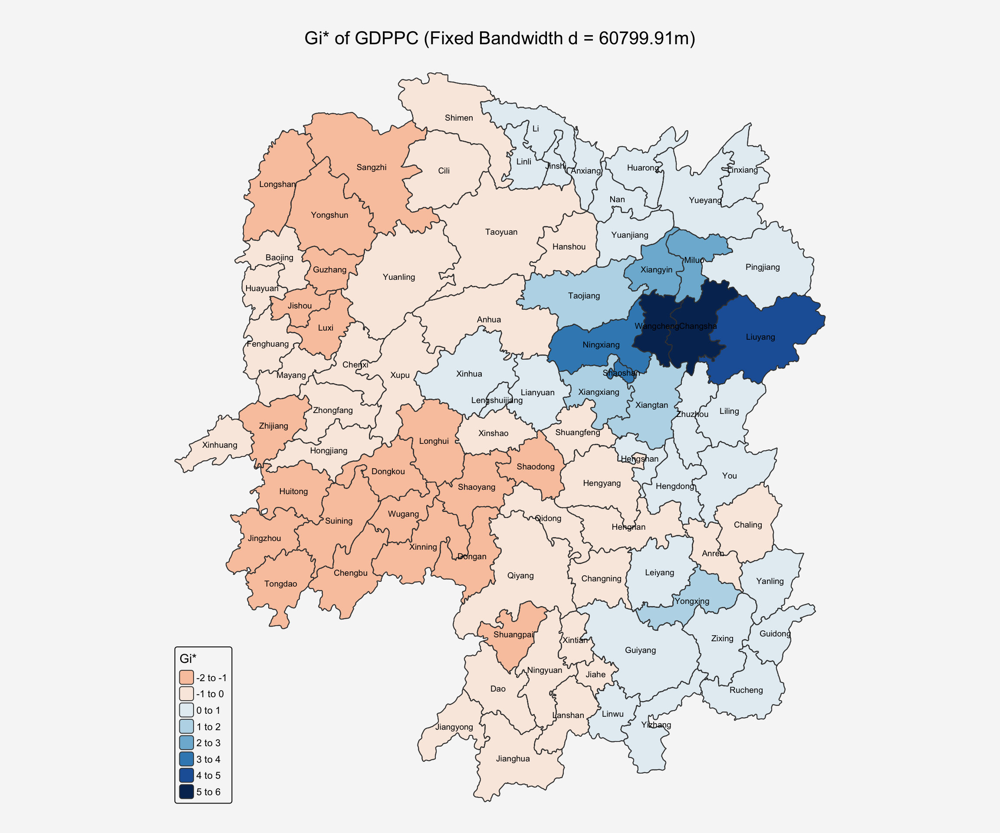
5.3.2 Mapping local Gi* p-values
The choropleth shows there is evidence for both positive and negative Ii values. However, it is useful to consider the p-values for each of these values, as consider above.
The code chunk below plots a choropleth map of p-values of Gi* by using functions of tmap package:
p_values_map <- tm_shape(HCSA_fdw) +
tm_polygons(fill = "p_sim",
fill.scale = tm_scale_intervals(
breaks = c(-Inf, 0.001, 0.01, 0.05, 0.1, Inf),
values = "-brewer.Reds"),
fill.legend = tm_legend(
title = "simulated p-value",
position = tm_pos_in("left", "bottom"
))) +
tm_borders(fill_alpha = 0.5) +
tm_title("p-values of local Gi* of GDPPC (Fixed distance)",
position = tm_pos_out("center", "top", "center"))+
tm_text("NAME_3", size=0.6)+
tm_layout(
bg.color = "#f6f6f6",
frame = FALSE)
p_values_map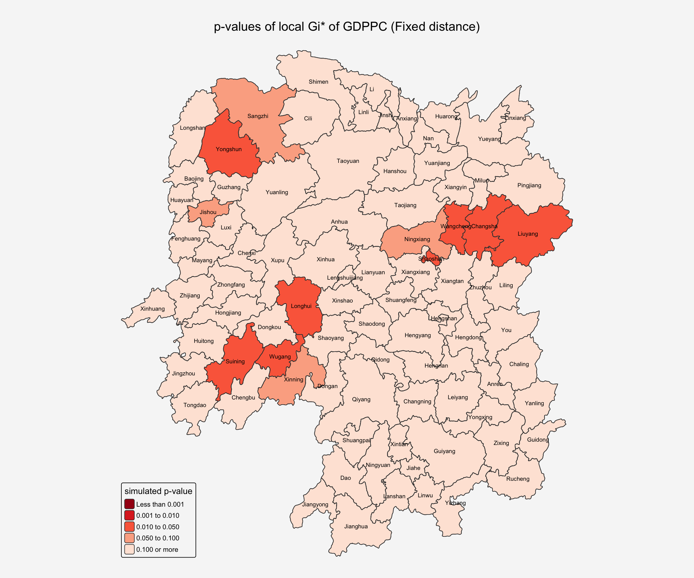
5.3.3 Mapping both Gi* values and p-values
tmap_arrange(Gi_star_map, p_values_map, asp=1, ncol=2)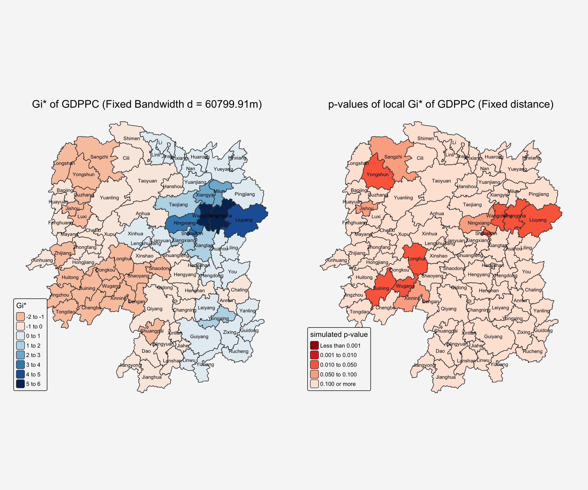
5.3.4 Plotting and visualising HCSA Map
By default, the HCSA classes are stored in cluster field of HCSA_fdw sf data frame. To prepare the HSCA map, we will derive a new field called HCSA_cluster from cluster field by using the code chunk below.
HCSA_fdw <- HCSA_fdw %>%
mutate(HCSA_cluster = case_when(
p_sim > 0.05 ~ "Insignificant",
p_sim <= 0.05 & cluster == "High" ~ "Hot spot",
p_sim <= 0.05 & cluster == "Low" ~ "Cold spot",
TRUE ~ "Other"),
HCSA_cluster = factor(
HCSA_cluster,
levels = c("Insignificant", "Hot spot", "Cold spot")
),
.before = 1
)Notice that a new class called Insignificant has been added for records whereby p_sim > 0.05.
Now, we can plot the HCSA map by using the code chunk below.
HCSA_map <- tm_shape(HCSA_fdw) +
tm_polygons(
fill = "HCSA_cluster",
fill.scale = tm_scale_categorical(
values = c(
"grey80", # Insignificant
"red", # Low-Low
"blue" # High-High
)
),
fill.legend = tm_legend(
title = "HSCA Cluster",
position = tm_pos_in("left", "bottom")))+
tm_title("HCSA Clusters (p_sim < 0.05)",
position = tm_pos_out("center", "top", "center"))+
tm_text("NAME_3", size=0.6)+
tm_layout(
bg.color = "#f6f6f6",
frame = FALSE)
HCSA_map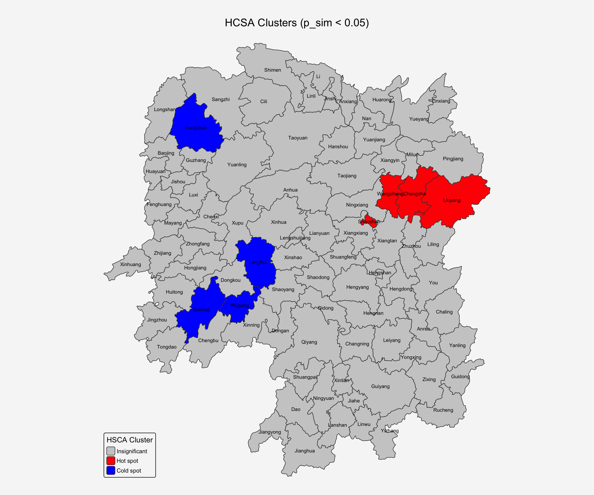
tmap_arrange(Gi_star_map, HCSA_map, asp=1, ncol=2)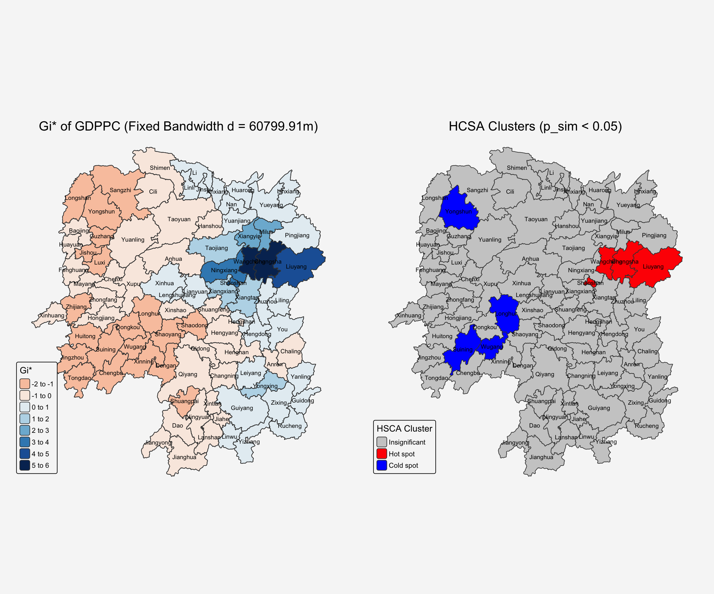
6 Reference
- Kam, T.S. (2025). Local Measures of Spatial Autocorrelation